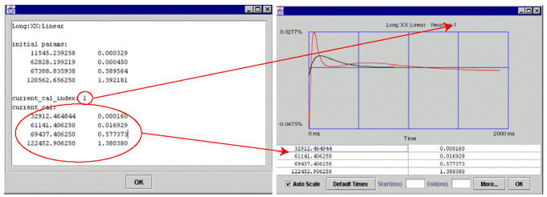

Operating Documentation
Direction 5133315-3, Rev# 14
Signa EXCITE HD 1.5T Service Methods
Module Version 1.0, Version Date 5/3/07
Operating Documentation |
| Required Persons | Preliminary Reqs | Procedure | Finalization |
|---|---|---|---|
| 1 |
No general safety information.
| Condition | Reference | Effectivity |
|---|---|---|
The Automatic Mode Should be Used for most proposes. Only use manual mode if required for touch up. | - | - |
System has bee configured and configuration tested in order to run Grafidy 3 | - | - |
If for some reason the Auto Mode procedure does not bring one or more of the numeric output final values of your system completely into specification, you may continue adjusting the out-of-specification values using Manual Mode.
After the Auto Mode scanning is complete, choose the Manual Mode Tab. See Illustration 1.
Illustration 1: Manual Mode Tab

Set the coil in the magnet on the scan axis desired, then highlight the scan components that you would like to perform (i.e. click on “Long XX”, or alternatively, click “select coil X” for xx, yx, zx of long and very long) and press “scan”. See Illustration 1.
The naming convention for a component is: the first letter refers to gradient axis, the second letter refers to coil axis (for example, yx means gradient is on the y axis, but the coils should be placed onthe x axis). Make sure the coil axis in the magnet and the selection are consistent.
After the scan is complete, a plot window will pop up that is similar to the one in Illustration 2. Notice that there are two buttons that read [Accept] and [Cancel]in the lower right corner.
Illustration 2: Results Window with Accept/Cancel Buttons

Choosing [Accept] will overwrite the previously-stored values in the calibration files (grafidyx.cal, grafidyy.cal and grafidyz.cal). Either [Accept] and scan again, or [Cancel] (to leave the values in the cal file/hardware from last accepted iteration) and stop.
If a “good fit” is shown (that is, residual eddy currents are getting smaller), click the [Accept] button to accept the output calibration parameters, and do another scan. The next measurement is likely to get rid of much of the residual eddy current present in this measure and improve output/result numbers.
If a “bad fit” bad fit is shown (that is, residual eddy current are increasing), click the [Cancel] button because a bad fit is not likely to improve output numbers for the next measurement.
The last iteration for any component should be check only and therefore should not accept the fitting cal parameters.
Refer to Illustration 3. If the two lines plotted appear to be similar in shape, the fit is probably good. To get a closer look at any one plot, you can choose the “Auto-Scale” function (the auto-scaled fit may appear to worsen as the display scale changes).
To focus on the front of the plot only, choose an End point (e.g., 100 ms). The default is 2000 ms.
Illustration 3: Examining a Fit

Illustration 3 has the same plots except the first one uses default time scale (0 to 2000 ms) and the second one uses time scale of (0 to 100 ms) therefore enlarged the portion of 100 ms.
It is interesting to note that the measured curve (red) and fitted curve (black) in the Illustration 3 example have very little in common (especially at the first 100 ms, where the fitted curve is cutting through the measured curve). So, it is very unlikely that any further iteration will improve eddy current compensation and get rid of the “oscillatory” behavior of the start portion of the plot. In this case, system limits have been reached. If the curve of the black line more closely matched that of the red, then another iteration would most likely improve eddy current compensation.
To set the vertical scale in “non-auto scale mode” to a set of values, in addition to the default value 0.2, by right clicking the “drawing area” of the pop-up and then selecting the scale you want. This is useful when you want to do a side-by-side comparison on the same scale other than default. See Illustration 4.
Illustration 4: Setting Auto-Scale Mode

There are 3 accept policies in manual mode: [Prompt to Accept], the default, Always Accept or Never Accept. See Illustration 5
Illustration 5: PROMPT TO ACCEPT

Prompt to Accept will show you what a fit looks like. Based on how good the fit looks, you can decided whether to accept or not.
Always Accept will always accept the fitted cal values. New values are accepted automatically without further intervention.
Never Accept will never accept the fitted cal values. This is useful when you're doing a “check only.”
Continue to Conditions Column
If a cell in the column “Conditions” is selected (long xx linear in this example), and then you click the [Show] button, you'll see a pop-up like the one shown in Illustration 6 (along with the first iteration’s popup). The pop-up lists:
Illustration 6: CONDITIONS CELL [SHOW] EXAMPLE POPUP

Initial cal values (initial parameters) of the component (long xx linear in this example) (the cal values of the component when Grafidy 3 was invoked). See Selecting Previous Interations for more information.
The current cal index = 1, which means that currently the cal values in the cal file (gafidyx.cal) and in the hardware/pre-emphasis were generated by iteration 1, and
The current cal values are also listed.
When an iteration (iteration 1 in this example) is finished for a component, and if the cal values are “accepted” into the cal file/hardware, the user will see current_cal_index equals to the last iteration number, and current_cal will be the same as contained in the popup of the last iteration (iteration 1 in this example) of the component.
Special cases:
Current cal index = 0: initial cal values is in the cal file/hardware.
Current cal index = -1: cal values are set to zero for the component.
Current cal index = -2: cal values are set to default (short time constant only).
No finalization steps.